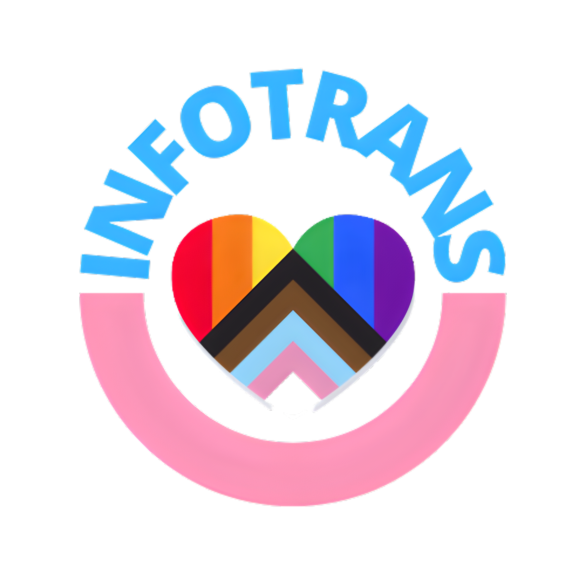

INFOTRANS
O InfoTrans está empenhado em lhe ajudar no seu processso de transição, trazendo as mais úteis informações.
| Linguagens que utilizo: |
|---|
| JavaScript |
| HTML |
| CSS |
| Git |
| GitHub |